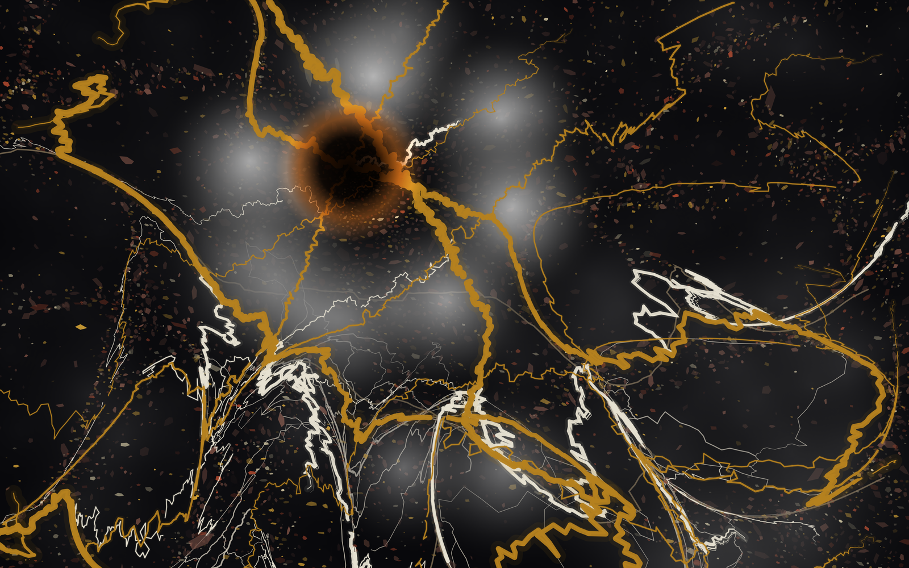
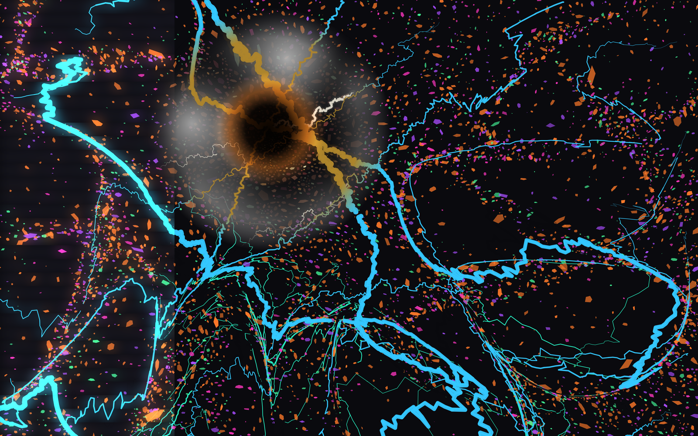
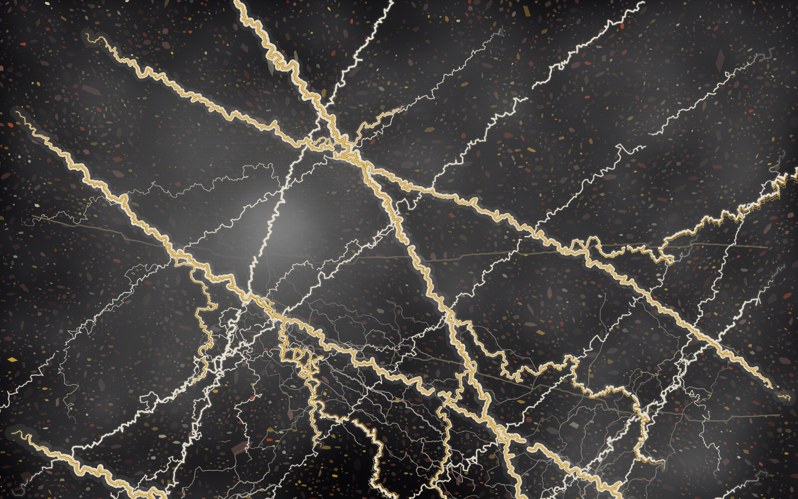
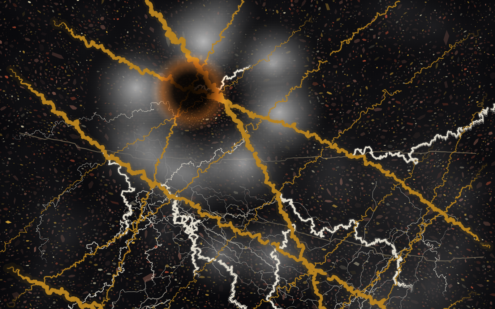
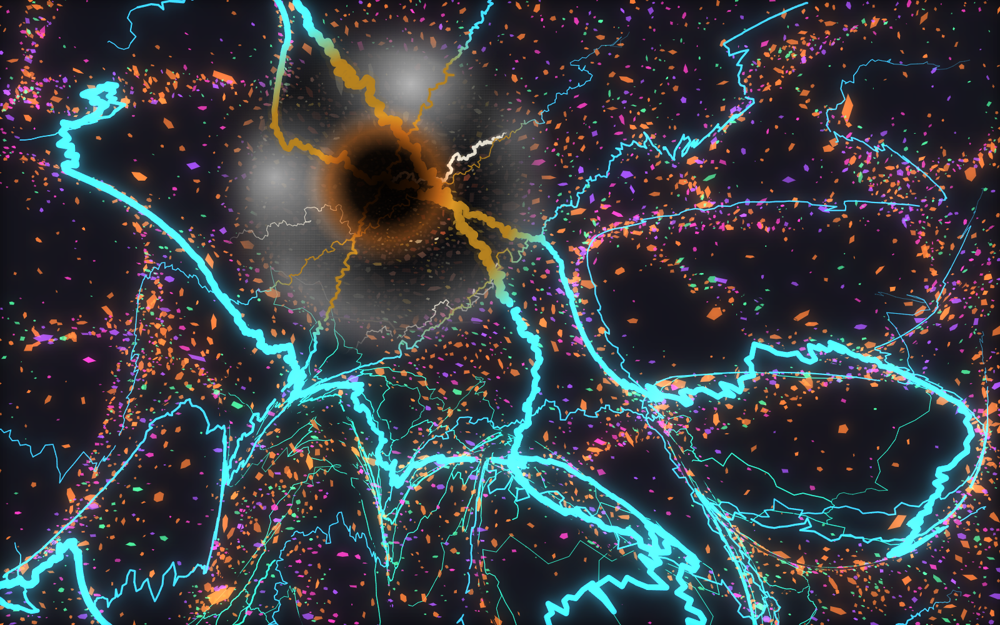
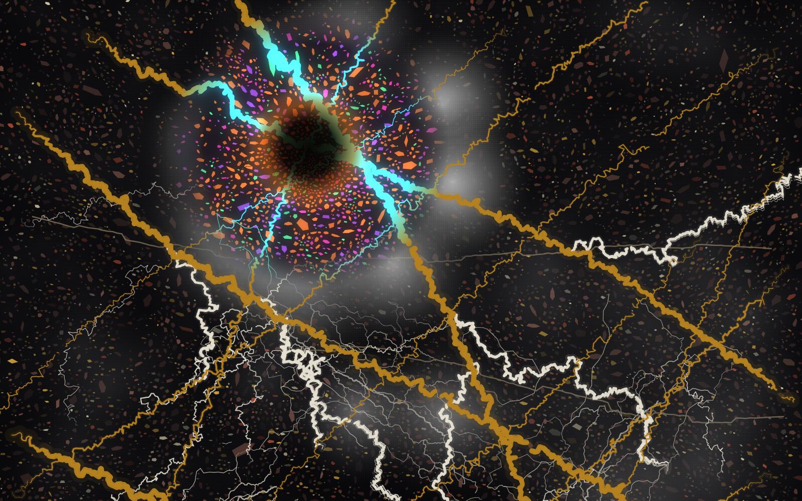
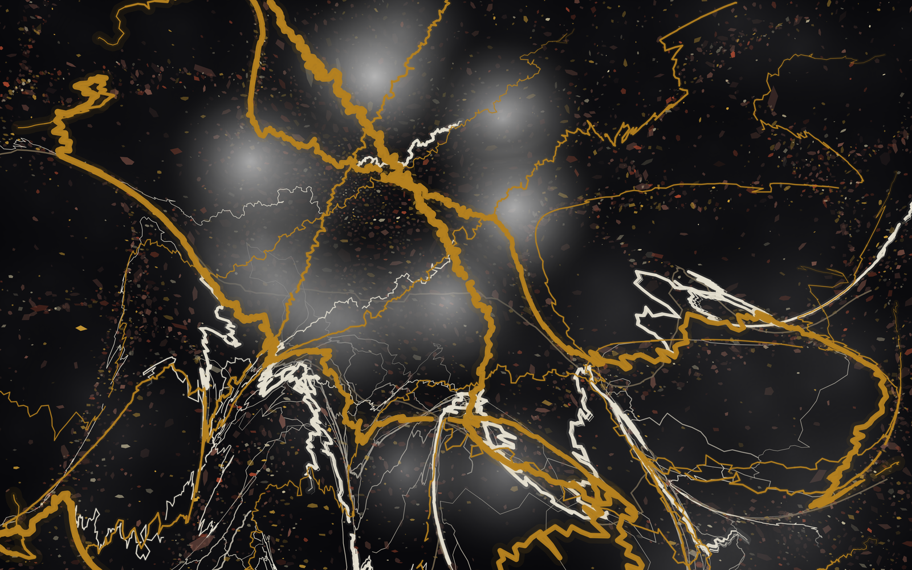
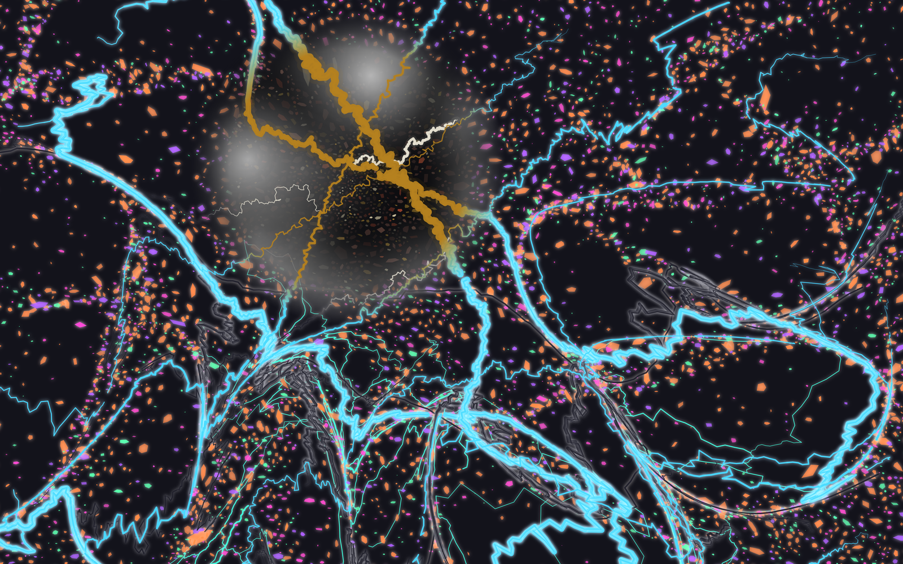

Stone Author · sample slab
One authored marble slab, shown four ways — pristine, subtly wrong, screaming, and turned inside out.
The fiction it was authored to: stone cut from a volume of space the warp got into. The scorch at the central junction is where something older held that zone — a wound that is also a protection. Ordinary eyes see the burned slab in daylight. A psyker sees what is under it. Same stone, same geometry, two sights.

Gold and white running over near-black granite. The scorch sits where the veins meet, and reads as damage.

The same geometry, screaming. And around the scorch, a held circle of ordinary daylight stone: the mark is not the damage, it is the thing keeping the damage out.
composited Both of those come off the same 65,535 × 40,959 master — 2.68 gigapixels, rendered as a grid of tiles straight to a tiled BigTIFF and downsampled here to 1600 px. The burn is painted on after the render: it is the one thing on this page the slab does not contain. Everything else — every vein, speck, fog bank and the entire spectrum change — is the renderer. The unburned masters are at the bottom of this page.
Stone Author draws stone as vector geometry, not pixels: veins, specks, fog and warp are a
few thousand simple shapes driven by a small recipe. The recipe — a .json slab — is the master,
and the render is a deterministic function of it: within one browser build the same slab renders
byte-identical every time — the gallery harness gates exactly that, twice from a fresh load — and the same
geometry can be drawn at any size. Across browser builds the picture is the same and the bytes are not, because
sub-pixel anti-aliasing moves; that comparison is recorded rather than gated. The four steps below came off two
slabs, rendered at 1600 × 1000; the post-steps that three of them add are recorded in
reference.json, parameter by parameter.

The married gold-and-white fracture network on near-black granite, exactly as authored. The base state the other three happen to, and the only picture here that is nothing but a slab and a renderer.

The same stone warped about 1.5% and scorched at the junction. Nothing you can point to, but the eye knows the veins don't quite land where they should.
Daylight and psyker are the same slab. One authored geometry, two lights: at rest it's near-true; under the other spectrum the full distortion it was always carrying is exposed.

The same slab at full warp, recoloured into emission: gold veins fire electric cyan, the granite scatters in neon. The burn holds as an island of normalcy — a window where the warp never reached, so real daylight stone shows through the screaming.
Then turn the mask inside out. The same disc, in the same place, asked the opposite question: not what did the warp fail to reach but what is the only thing it reached.

The same slab, the same burn, the same disc — but the mask now inverts. The warp is permitted only inside that circle, so the stone around it holds perfectly still: gold and white veins running straight across the granite, in daylight. And the disc looks out on the psyker spectrum. Not an island of calm in a screaming field — a hole in an otherwise ordinary slab, with the screaming on the other side.
pure render The same two sights with nothing added —
no burn, no compositing, no retouch. These are the 2.68-gigapixel masters downsampled to 1600 px, and they are
what the slab actually produces. Each master carries its own record of the render that made it — build, engine,
hardware class, tile plan, timings, and a device identity sealed under the slab's own bytes — readable with
node tools/tiff-meta.mjs <file>, which is how every figure published about this renderer is
checked. Both were rendered on a 12-core desktop under Blink, 65,535 × 40,959 in 40 passes of 8192.

65,535 × 40,959 in 40 passes of 8192, on a 12-core desktop under Blink. 730 MB of tiled BigTIFF.

The same geometry under the other light, and the window is rendered, not composited: ordinary daylight stone standing in the middle of the screaming, because the mask is a real mark in the slab. Put the burn back on top of this and you have the picture at the head of the page.